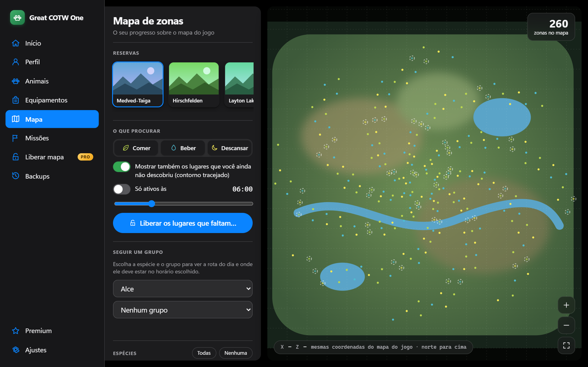
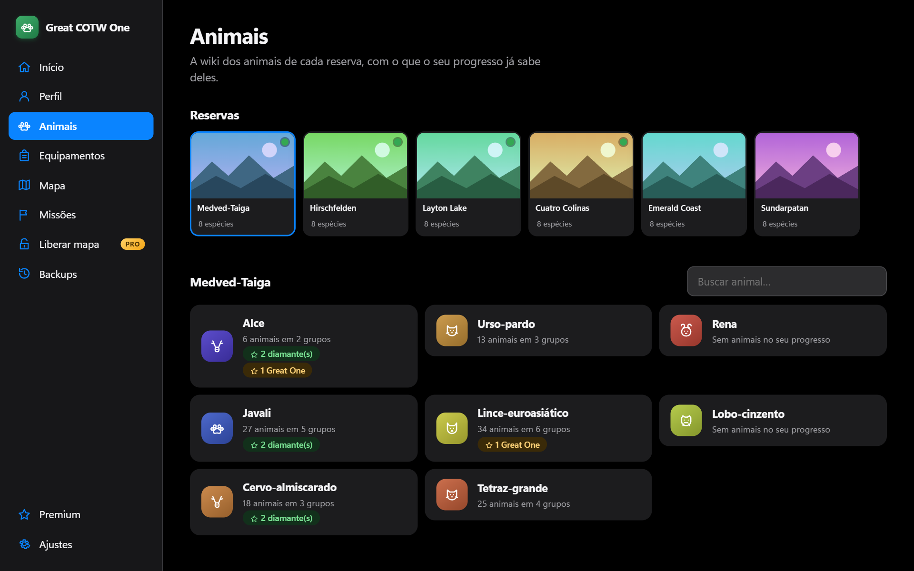
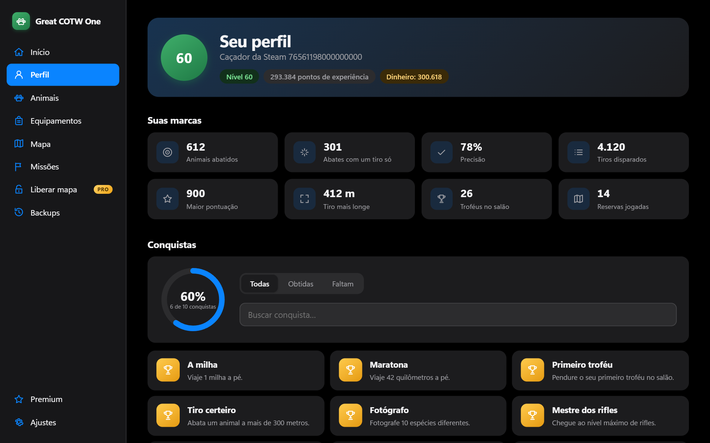
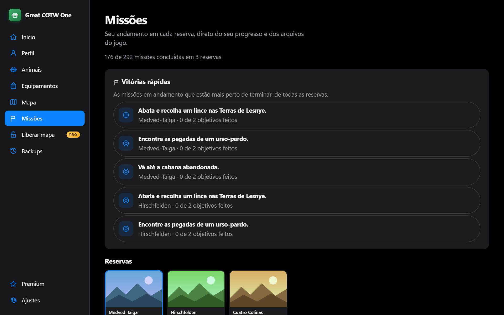
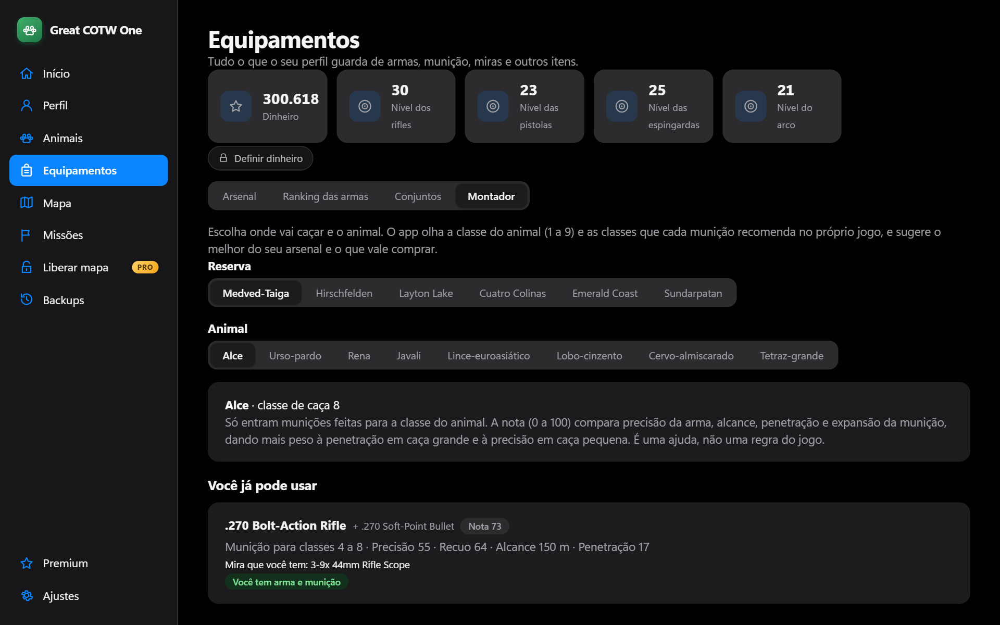
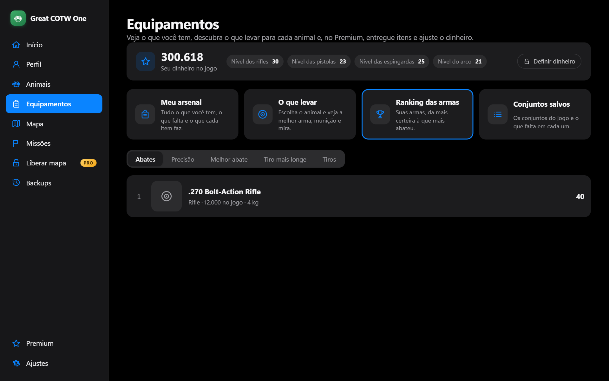

Zone map and group tracker
See where animals eat, drink and rest, on the game's own map. Pick a group and the app draws the day's route with the time of every stop and where it should be right now.
Fan project · Windows 10 and 11 · 100% single-player
Great COTW One reads your theHunter: Call of the Wild save and shows where each animal group goes and when, which weapon and ammo fit each animal, and everything you have achieved. No spreadsheets, no code.

The app reads your save and your game install and turns it all into simple screens.
See where animals eat, drink and rest, on the game's own map. Pick a group and the app draws the day's route with the time of every stop and where it should be right now.
Every reserve and species, where each animal lives, how many you have in your save (males, females, Great Ones, top weight and score) and your best harvests.

Level, kills, accuracy, longest shot, trophies and Steam achievements, with filter and search.

How much is left in each reserve, what is in progress and the mission list with the game's own text.

The Equipment page shows everything your profile holds and answers every hunter's question: what do I bring for this animal?
Weapons, ammo, sights, lures and field gear with icons from your own game, what you own, what is missing and the level that unlocks each item.
Shots, hits, accuracy, kills, one-shot kills, record and longest shot for each weapon. Sort by kills, accuracy or record.
Pick the reserve and the animal. The app uses the animal's hunting class and the classes each ammo recommends in the game itself, and suggests the best from your arsenal plus what is worth buying.
See your loadouts, which one is active and what items are missing in each.


Screens use sample data. In the app you see your own arsenal and your game's icons.
Touching a save is scary. So every rule below is tested and applies to everything the app writes.
A full copy before any write. Backups are never deleted and you can go back to the previous moment with one click.
The app checks whether the game is running and refuses to write while it is.
Every change is shown for you to confirm and then re-read to verify, byte by byte.
No multiplayer and no game automation.
No game file, image or data ships in the installer: the app reads your install on the spot.
Yes. The app keeps a full copy before any write, never writes with the game open, shows what will change before applying it and re-reads the file afterwards to check. You can go back with one click.
The app is single-player only and does not automate the game. Do not use the edits on saves tied to online modes.
No. The app reads your save and installed game straight from your computer. The Premium license is also checked offline.
theHunter: Call of the Wild installed through Steam, on Windows 10 or 11, with at least one saved game. The Askiy Ridge and Intisuyu maps are still to be confirmed.
The installer does not have a paid digital signature yet, so SmartScreen distrusts any new program. Click More info and then Run anyway.
English, Português and Español, chosen in Settings. Animal, mission and achievement names follow the language.
Everything that reads your game is free: map, animals, profile, missions, equipment and backups. Premium is what writes: unlocking zones, editing animals and giving items.
Download, open and let the app find your save on its own. Installation is per-user and needs no administrator password.
Download for Windows